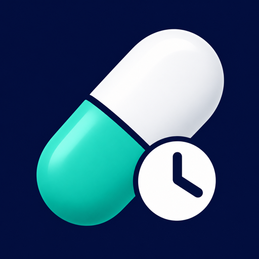

Development journal / iPhone & iPad
Meet PopTP: a new look for our medicine-tracking prototype
Keeping a medicine routine organised can mean juggling labels, changing instructions and questions for the next appointment. We’re developing PopTP to help bring those details together in one place, with older users and carers in mind.

Read, review, then confirm
The current prototype can read label text on the device from a photograph, with manual entry available too. Users review the wording, correct the details and confirm the prescribed dose and timing before saving a label-derived schedule. PopTP does not independently prescribe doses or decide how treatment should change.
Daily tracking keeps Taken, Skipped and Not recorded separate. An unrecorded dose is never automatically described as missed. Dated change history helps keep earlier records understandable when a schedule changes.
Bring the details to the appointment
The Health section supports multiple conditions, with separate notes for allergies and previous reactions. In-app reviews let users confirm what has changed in their recorded conditions, medicines and doses when they open the app.
A previewed PDF summary can bring medicine records, health information and appointment questions together for a conversation with a doctor or pharmacist. Records remain local to the device, and sharing a summary is a separate action chosen by the user.
Australian references, with clear limits
PopTP includes an offline Australian PBS catalogue dated 1 October 2026. It supplies dated product references, alongside user-entered pharmacy quotes. These are not live pharmacy prices. Clinical checks for interactions between medicines, conditions or allergies are currently unavailable.
Where the prototype stands
The current build targets iOS 27 and iPadOS 27 and has been tested in the simulator. The prototype is not publicly available and has not been released on the App Store or TestFlight. It is not a clinically validated interaction checker.
Larger text and clear controls guide the design, while accessibility testing continues. Further work includes the remaining iPhone contrast finding and real-device checks for VoiceOver, notifications and permissions. We’ll share further development updates as that work progresses.